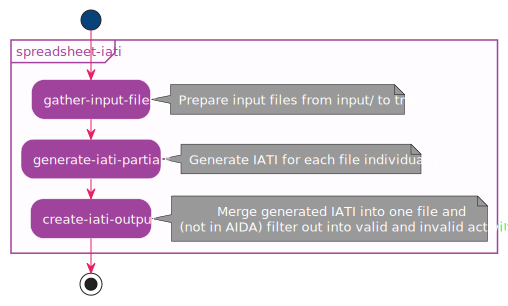
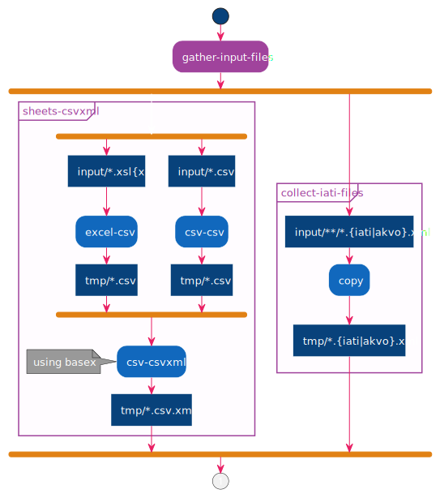

Spreadsheets2IATI
Combine and convert spreadsheets and IATI files into a single set of files for IATI activities and IATI organisations.
Spreadsheets2IATI
The conversion process is initiated by a local call of aida-s2i in the workspace.
$ aida-s2i spreadsheet-iati
The process breaks down in a couple of components.

Figure 1. Sequence for
spreadsheet-iatiGather input files
This step takes files from the input folder,
and prepares them for processing, in a flat tmp folder.
-
Excel files are converted into CSV.
-
Excel and CSV are then converted into an XML format.
-
Akvo and IATI XML files are copied.
